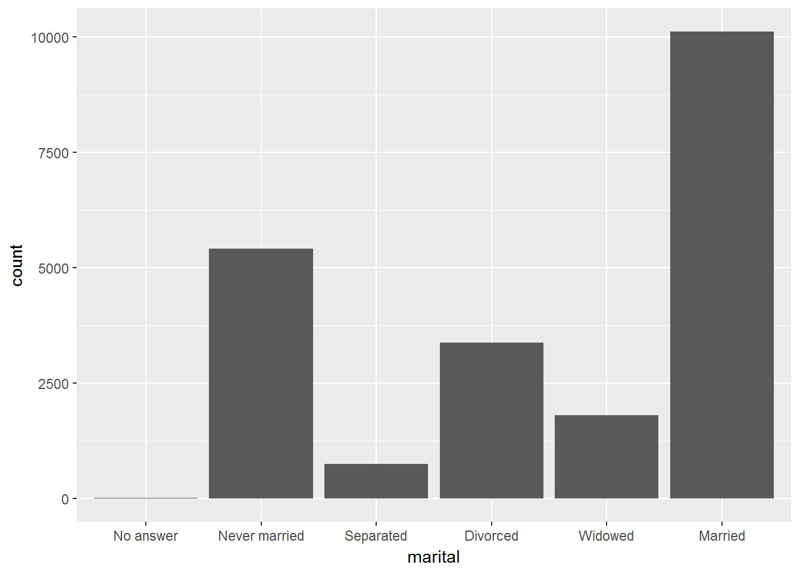
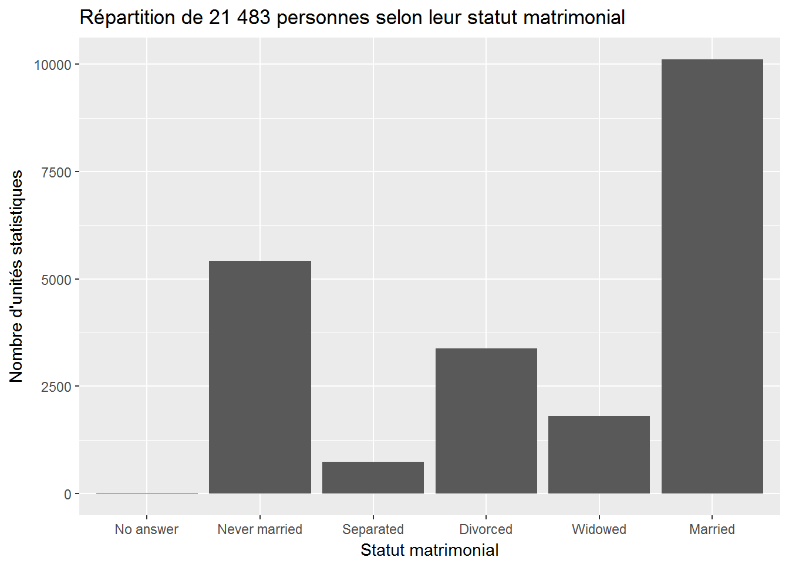
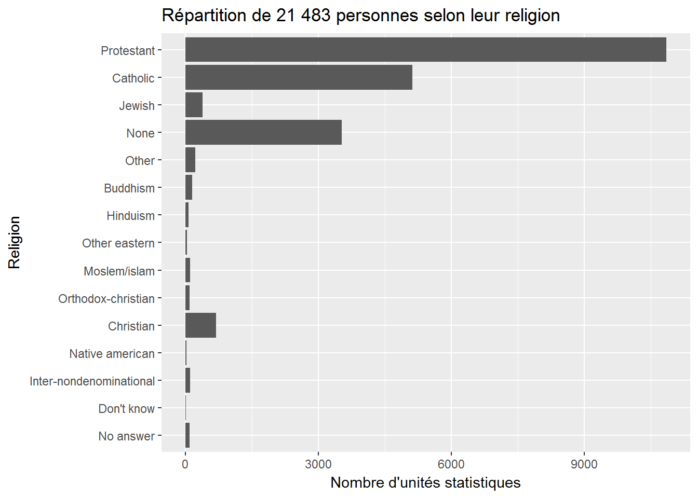

10 Les variables qualitatives
10.1 Mise en place
10.2 Tableau de fréquences
Une fois les données d’un sondage recueillies, il est plus aisé d’analyser ces données si elles sont classées dans un tableau.
Le tableau de fréquences que nous utiliserons est le suivant:
| Titre | ||
|---|---|---|
| Nom de la variable | Nombre d’unités statistiques | Pourcentage d’unités statistiques (%) |
| (Modalités) | (Fréquences absolues) | (Fréquences relatives) |
| Total | n | 100% |
Important : Le titre doit toujours être indiqué lors de la construction d’un tableau de fréquence.
Lorsque les données se trouvent dans une tibble dans R, il est possible d’utiliser la commande freq de la librairie questionr pour afficher le tableau de fréquences. La commande freq prend comme argument la variable dont vous voulez produire le tableau de fréquences. Pour obtenir une sortie adéquate, il faut ajouter trois options à la commande:
cum = FALSE; permet de ne pas afficher les pourcentages cumulésvalid = FALSE; permet de ne pas afficher les données manquantestotal = TRUE; permet d’afficher le total
Dans la base de données forcats::gss_cat, nous allons afficher la variable marital. Dans la commande ci-dessous, nous enregistrons le tableau de fréquences dans la variable tab_marital. Nous l’affichons ensuite à l’aide de la commande kable.
| n | % | |
|---|---|---|
| No answer | 17 | 0.1 |
| Never married | 5416 | 25.2 |
| Separated | 743 | 3.5 |
| Divorced | 3383 | 15.7 |
| Widowed | 1807 | 8.4 |
| Married | 10117 | 47.1 |
| Total | 21483 | 100.0 |
À l’aide du tableau précédent, répondez aux questions suivantes:
- Combien de personnes ne se sont jamais mariées dans l’échantillon? 5416
- Quel est le pourcentage de personnes divorcées dans l’échantillon? 15.7 %
- Quel est le nombre total d’unités statistiques? 21483
Nous pouvons produire le tableau de fréquences de la variable race de la façon suivante:
| n | % | |
|---|---|---|
| Other | 1959 | 9.1 |
| Black | 3129 | 14.6 |
| White | 16395 | 76.3 |
| Not applicable | 0 | 0.0 |
| Total | 21483 | 100.0 |
10.3 Représentation graphique - Le diagramme à bandes
Pour représenter graphiquement les variables qualitatives, nous allons utiliser les diagrammes à bandes.
Pour construire ce graphique:
- Chaque modalité est représentée par un rectangle.
- La hauteur de chaque rectangle doit être proportionnelle
- au nombre d’unités statistiques (la fréquence absolue) OU
- au pourcentage d’unités statistiques (la fréquence relative).
- Le titre et les fréquences (absolues ou relatives) doivent être indiqués.
- L’axe des x doit posséder un titre : le nom de la variable étudiée.
- L’axe des y doit posséder un titre : “Nombre d’unités statistiques” ou “Pourcentage d’unités statistiques”.
- La graduation de l’axe des y doit commencer à zéro (l’axe ne doit pas être coupé).
- Les rectangles doivent être équidistants et de largeur égale. De plus, ils ne doivent pas être collés.
Pour produire le diagramme à bandes, nous utiliserons l’extension ggplot2 qui est chargée avec le coeur de la librairie tidyverse. La grammaire graphique de ggplot2 peut être décrite de la façon suivante:
A statistical graphic is a
mappingofdatavariables toaesthetic attributes ofgeometric objects.
Plus spécifiquement, nous pouvons briser un graphique en trois composantes essentielles:
data: la base de données contenant les variables que nous désirons visualiser.geom: l’objet géométrique en question. Ceci réfère au type d’objet que nous pouvons observer dans notre graphique. Par exemple, des points, des lignes, des barres, etc.aes: les attributs esthétiques (aesthetics) de l’objet géométrique que nous affichons dans notre graphique. Par exemple, la position x/y, la couleur, la forme, la taille. Chaque attribut peut être associé à une variable dans notre base de données.
10.3.1 La variable marital
Nous allons visualiser le diagramme à bandes de la variable marital provenant de la base de données forcats::gss_cat. Nous devons spécifier:
data = gss_cat: la base de données.aes(x = marital): la variable étudiée.geom_bar(): nous voulons un diagramme à bandes
La commande est donc:

Pour ajouter un titre et indiquer les titres des axes x et y, nous utilisons la commande labs (pour labels).
ggplot(data = gss_cat, aes(x = marital))+
geom_bar()+
labs(
title = "Répartition de 21 483 personnes selon leur statut matrimonial",
x = "Statut matrimonial",
y = "Nombre d'unités statistiques"
)
10.3.2 La variable relig
Nous pouvons afficher le diagramme à bandes horizontales de la variable relig en ajoutant la commande coord_flip(). Nous avons donc:
ggplot(data = gss_cat, aes(x = relig))+
geom_bar()+
labs(
title = "Répartition de 21 483 personnes selon leur religion",
x = "Religion",
y = "Nombre d'unités statistiques"
)+
coord_flip()